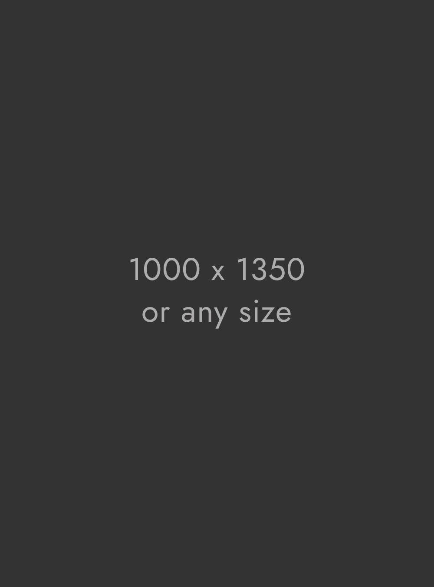

How to turn Victorian gasholders apartments

Seymour Whyte employs 475 people and generated revenue of A$433 million in the fiscal year ended on 30 June 2017. Founded in 1987, Seymour Whyte is a well-known Australian company operating in the fields of civil engineering.
- Acquisition of 100% of Seymour Whyte’s shares
- 2017 revenue of A$433 million
- VINCI Construction expansion in the Pacific area
On 23 October 2017, VINCI Construction finalised the acquisition of the Seymour Whyte company based in Queensland. The acquisition was finalised followed purchase of 100% of the shares of the company previously listed on the Sydney stock exchange.
Seymour Whyte employs 475 people and generated revenue of A$433 million in the fiscal year ended on 30 June 2017. Founded in 1987, Seymour Whyte is a well-known Australian company operating in the fields of civil engineering, earthworks and utilities, notably for the construction of roads, bridges and water and pipeline infrastructure.
“Seymour Whyte is a company that resembles us, with a strong entrepreneurial culture. This acquisition will enable us to expand synergies with VINCI Construction’s existing expertise in Australia and more broadly in the Pacific area,” said Jérôme Stubler, Chairman and Chief Executive Officer of VINCI Construction.
 This acquisition, added to that of HEB Construction in New Zealand in 2015, strengthens VINCI Construction’s operations in the Pacific area, where it generated 2016 revenue of €549 million, employs 2,000 people and delivers wide-ranging expertise in the highway construction, civil engineering, soil reinforcement and oil & gas sectors.
Over the past decade, Seymour Whyte Constructions has completed more than 80 infrastructure projects in Queensland and New South Wales, including modernisation of the Ipswich motorway, the access roads to the Sydney airport and, more recently, renovation of a section of the Bruce Highway motorway.
With more than 90 years of experience, Spiecapag is one of the world’s leading oil pipeline, gas pipeline and associated systems companies. Recent project references include participation in the huge PNG LNG project in Papua New Guinea in 2014. Spiecapag also played a notable role in the Incahuasi project in Bolivia at the end of 2015, and is currently involved in the Trans Adriatic Pipeline project in Greece and Albania. Spiecapag is part of the Entrepose Group, which designs, builds and operates onshore, offshore and underground production, transport and storage infrastructure for the oil & gas and other energy industries.
This acquisition, added to that of HEB Construction in New Zealand in 2015, strengthens VINCI Construction’s operations in the Pacific area, where it generated 2016 revenue of €549 million, employs 2,000 people and delivers wide-ranging expertise in the highway construction, civil engineering, soil reinforcement and oil & gas sectors, construction, civil engineering, soil reinforcement and oil & gas sectors. This acquisition, added to that of HEB Construction in New Zealand in 2015, strengthens VINCI Construction’s operations in the Pacific area, where it generated 2016 revenue of €549 million, employs 2,000 people and delivers wide-ranging expertise in the highway construction, civil engineering, soil reinforcement and oil & gas sectors.